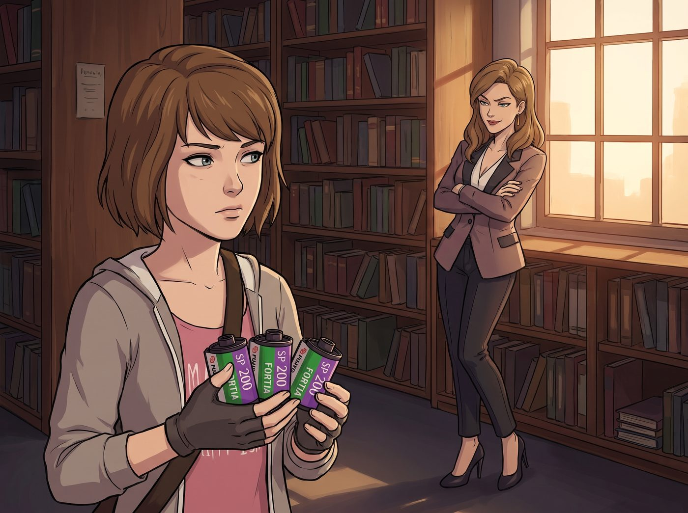

膠片同好會

一、暗號交易
暗房事件的巨大衝擊過後,留在學校的 Victoria,褪去了往日那股霸凌人的尖銳刺氣,但骨子裡那份名媛文藝精英的傲嬌,依然完好無損地保留著。
當全校都在盲目追捧 4K 數位修圖的浪潮時,她卻和 Max,在「膠片的美學執念」上,意外達成了一種極度彆扭的同盟。
某天在圖書館角落,Victoria 踩著高跟鞋走過來,看到 Max 手裡捏著幾卷過期膠捲,抱著雙臂,用一種居高臨下的姿態開口。
「考菲爾德,」她說,「聽說妳手上有兩卷 2008 年產的富士 Fortia SP?開個價,或者我拿我叔叔從巴黎帶回來的伊爾福黑白純銀相紙,跟妳換。」
Max 挑眉,語氣裡帶著一絲不易察覺的興趣:「妳確定要用純銀相紙,換兩卷過期的彩色負片?」
「稀有度不分貴賤,」Victoria 傲然地甩了甩頭髮,「懂行的人自然明白其中價值。」
兩人表面上依舊維持著慣常的冷嘲熱諷,私底下,卻開始在無人的走廊裡,交換起暗房顯影液配方和測光表數據,像是兩個心照不宣的地下同好。
二、課堂降維打擊
新任教授——正是 Ms. Whitfield,某堂課上,興致勃勃地推銷起一款「一鍵生成膠片顆粒」的付費插件,吹噓著它如何完美模擬傳統膠片的質感。自從那間暗房被拆除、她一頭栽進數位教學的世界後,倒是練就了一身把任何科技噱頭都能講得天花亂墜的本事。
Victoria 優雅地舉起手,語氣裡帶著毫不掩飾的挑剔。
「教授,」她開口,「這個算法模擬的溴化銀顆粒分佈,缺乏布列松式的有機隨機性——說白了,就是廉價的數字噪點。」
坐在後排的 Max,幾乎是心領神會地小聲接上一句:「而且它的陰影動態範圍截斷太硬了。」
教授被這番專業點評噎得一時說不出話,尷尬地清了清嗓子,含糊帶過這個話題。
Victoria 隔著半個教室,朝 Max 的方向瞥了一眼,兩人視線短暫交會,她隨即傲嬌地翻了個白眼,轉過頭去,嘴角卻掛著一絲心照不宣的弧度。
三、吃醋警報
下課後,Victoria 又湊到 Max 身邊,壓低聲音討論起中畫幅相機的光圈選擇,兩人聊得投入,完全沒注意到教室另一頭投來的視線。
Chloe 大步流星地走過來,一把攬住 Max 的脖子,惡狠狠地瞪向 Victoria。
「喂,蔡斯大小姐,」她語氣裡帶著毫不掩飾的警告,「離我家首席攝影師遠點。想買相紙,自己去排隊,別想拿妳的信託基金套近乎。」
Victoria 冷笑一聲,伸手撫平衣領,姿態依舊高傲。
「放心吧,Price,」她語氣淡淡的,帶著一貫的疏離感,「我只對她的快門感興趣,對妳身上那股機油味,敬而遠之。」
「妳說誰身上有機油味!」
Max 被夾在兩人中間,看著這場熟悉的拌嘴戲碼,忍不住笑出聲,乾脆順勢踮起腳,直接在 Chloe 臉頰上落下一個輕快的吻,示意她別再鬧了。
「行了行了,」她笑著打圓場,「Victoria 只是想跟我換相紙,妳這醋吃得也太沒道理了。」
「醋?」Chloe 被這突如其來的一吻噎得瞬間軟了語氣,耳根悄悄泛紅,嘴上卻依然嘴硬,「老娘這叫警戒心,懂不懂?」
Victoria 抱著她那盒相紙,看著眼前這一幕毫不遮掩的公開放閃,忍不住又是一聲長長的嘆息,搖著頭轉身就走。
「我怎麼每次,」她邊走邊嘟囔,語氣裡帶著見怪不怪的無奈,「都得在光天化日之下,目睹你們這種毫無廉恥的放閃現場。」
即便如此,她轉身時,嘴角那抹弧度,終究還是沒能繃住,悄悄地又深了幾分。